의공기사 (2015-09-19 기출문제)
1과목: 기초의학 및 의공학
1. 유리 마이크로 피펫 미세전극을 이용하여 세포 내부의 전압을 측정하는 경우 미세전극 내부에 채우는 전해액으로 적당한 것은?
- 150 mole NaCl
- 3 mole HCl
- 3 mole NaCl
- 3 mole KCl
(정답률: 71%)

2. 심전도 검사 시 의료용 페이스트(paste)가 준비되지 않았을 경우, 대신 사용할 수 있는 용액은?
- 식염수
- 증류수
- 75% 알코올
- 녹말용액
(정답률: 92%)
3. 시냅스에서 신경전달물질의 양을 조절하는 기전이 아닌 것은?
- 시냅스 간극 바깥쪽으로 확산되어 없어짐
- 효소에 의해 파괴됨
- 재흡수 되는 과정을 통해 시냅스 전 신경세포 축삭으로 흡수
- 시냅스 후 수용체에 의해 흡수되어 사라짐
(정답률: 54%)
4. 세포에서 유전정보인 DNA와 단백질을 만드는 데 필요한 RNA를 담고 있는 구조는?
- 세포막
- 막단백질
- 미토콘드리아
- 핵
(정답률: 91%)
5. 다음 ( )안에 알맞은 용어는?
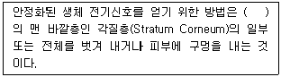
- 진피층
- 표피층
- 투명층
- 과립층
(정답률: 91%)
6. 일반적인 화학센서에서 측정하는 대상물질로만 짝지어진 내용이 아닌 것은?
- 수소이온농도, 산소분압
- 대사산물, 광량
- 산소분압, 이산화탄소분압
- 헤마토크릿, 전해질
(정답률: 70%)
7. 다음은 해부학적 방향에 대한 용어설명이다. 해당하는 방향은?
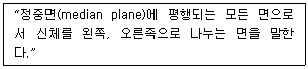
- 시상면(sagittal plane)
- 관상면(coronal plane)
- 이마면(frontal plane)
- 가로면(transverse plane)
(정답률: 89%)
8. ECG 의 측정방법 중 팔다리에서 측정하는 신호가 아닌 것은?
- LEAD 1
- V6
- aVF
- aVR
(정답률: 85%)
9. 호흡기계의 기능이 아닌 것은?
- 혈액이나 체액의 갑작스런 pH 변화 방지 기능
- 공기의 온도와 습기조절 능력으로 기관보호
- 미생물, 공기 중의 독소입자로부터 신체 보호
- 확산을 통한 산소공급 및 이산화탄소 제거
(정답률: 62%)
10. 세포외액에서 농도가 가장 높은 이온은?
- Na+
- Cl-
- K+
- HCO3-
(정답률: 84%)
11. 중추 신경계에 속하지 않는 것은?
- 미주신경
- 시상
- 뇌간
- 척수
(정답률: 79%)
12. 흡착전극(suction electrode)에 대한 설명으로 틀린 것은?
- 탈부착 작업이 쉽다.
- 피부 표면에 부착하는 전극이다.
- 동잡음(motion artifact)이 비교적 크다.
- 인체 내부의 장기에 부착해서 측정한다.
(정답률: 90%)
13. 직육면체의 금속에 열을 가하고 길이의 변화에 따른 저항을 측정하였다. 열에 의해 금속의 길이는 20% 늘어났고, 면적은 10% 증가했다. 저항계수가 열에 의해 10% 증가했다면 총 저항의 변화율은?
- 10% 감소
- 10% 증가
- 20% 감소
- 20% 증가
(정답률: 77%)
14. 광전식 혈량 측정 장치에서 측정되는 맥파의 전파속도를 2배로 올리려면 영(Young)의 탄성계수를 몇 배로 하여야 하는가?
- 1배
- 2배
- 4배
- 8배
(정답률: 75%)
15. 우심방과 우심실 사이에 있는 판막은?
- 폐동맥판
- 승모판
- 삼첨판
- 중격
(정답률: 76%)
16. 전기적 흥분이 신경세포에서 신경세포로 전달되는 메커니즘과 심장세포와 심장세포사이로 흥분이 전달될 수 있는 메커니즘을 바르게 짝지은 것은?
- synapse - synapse
- synapse – gap junction
- cable theory – starling's law
- 크리스티앙 외르스테드의 법칙 – 렌쯔의 법칙
(정답률: 83%)
17. 다음 중 심장, 혈관, 호흡계를 조절하는 중추는?
- 간뇌
- 중뇌
- 교
- 연수
(정답률: 69%)
18. 대뇌피질의 시각영역이 속하는 부위는?
- 전두엽
- 측두엽
- 두정엽
- 후두엽
(정답률: 77%)
19. 골격근과 뼈의 연결부위에 위치하는 구조물은?
- 인대
- 활막
- 건
- 연골
(정답률: 71%)
20. 다음은 피부표면에 부착된 전극의 전기적 등가회로에서 전극-페이스트 경계면의 등가회로를 나타낸 것이다. 이에 대한 설명으로 틀린 것은?
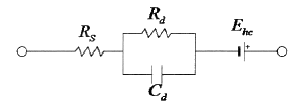
- Ehc는 전극표면에 나타나는 반전지 전위를 의미한다.
- Rs는 땀에 의한 저항성분과 진피의 저항성분을 제외한 전해질 전체의 저항성분을 의미한다.
- Rd는 전극-전해질(페이스트)의 저항성분을 의미한다.
- Cd는 전극-전해질(페이스트)의 커패시턴스 성분을 의미한다.
(정답률: 80%)
2과목: 의용전자공학
21. 불대수의 연산으로 틀린 것은?
- A + 0 = 0
- A + 1 = 1
- A · 1 = A
- A · 0 = 0
(정답률: 81%)
22. 다음 회로에서 P-N 접합 다이오드와 LED의 순방향 전압강하가 각각 0.7V와 2.0V일 때, LED로 흐르는 전류는?
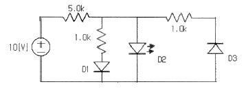
- 0 mA
- 0.3 mA
- 1.3 mA
- 1.6 mA
(정답률: 53%)
23. 주로 마이크로파 통신, 레이더, 국제전화에 사용되는 주파수는?
- 장파
- 단파
- 초단파
- 센티미터파
(정답률: 63%)
24. 생체의 압력계측 중 혈압측정에 있어서 직접측정법에 대한 설명이 아닌 것은?
- 실시간으로 계측이 가능하다.
- 혈관 내로 플루드 필드(Fluid-filled) 카테터를 삽입한다.
- 말단 부위에 커프(Cuff)를 부착하고 압력을 증가한다.
- 카테터에 스트레인 게이지(Strain-gauge) 타입의 압력센서를 연결하여 파형을 측정한다.
(정답률: 83%)
25. 커패시터 필터에 관한 설명으로 틀린 것은? (단, Vr은 리플전압의 실효값, VDC는 피러의 직류전압의 평균값이다.)
- 맥동률
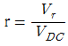
이다. - 리플이 클수록 효율적인 필터이다.
- 커패시터의 용량을 크게 하면 출력전압은 직류에 가까워진다.
- 커패시터의 충전과 방전에 의한 출력전압의 변동이 리플전압(ripple voltage)이다.
(정답률: 81%)
26. 생체계측을 위한 기본 구성 중 센서에 대한 설명으로 틀린 것은?
- 생체의 측정대상에 대한 고통과 해를 최소화해야 한다.
- 생체에서 측정하고자 하는 대상에서 발생하는 에너지형태에만 반응한다.
- 가변 변환소자는 센서의 작동을 위한 전력공급을 필요로 한다.
- 생체에서 뽑아내는 에너지를 최대한으로 요구한다.
(정답률: 80%)
27. 생체계측기기의 비선형적 특성이 아닌 것은?
- 포화(saturation)
- 불감대(dead zone)
- 브레이크다운(breakdown)
- 감도표류(sensitivity drift)
(정답률: 65%)
28. 단위 정전하가 회로의 두 점간을 이동할 때 얻거나 또는 잃는 에너지를 두 점 사이의 무엇이라 정의하는가?
- 전류
- 전압
- 전하
- 저항
(정답률: 68%)
29. 마이크로프로세서의 중요한 인터페이스에 대한 설명으로 틀린 것은?
- I/O(Input/Output)포트는 입출력 인터페이스이다.
- CPU와 외부장치사이에는 병렬입출력 인터페이스가 있다.
- 외부에 메모리를 둘 경우 주소버스의 하위 바이트를 사용한다.
- I/O(Input/Output)포트는 비트주소지정(bit addressing)이 불가능하다.
(정답률: 77%)
30. 다음 R-L-C 직렬회로에서 R=4Ω, XL=9Ω, XC=6Ω이고, 전압 V=200V의 사인파 교류전압을 인가했을 때 이 회로에 흐르는 전류(A)의 크기는?
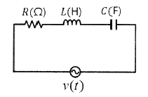
- 10 A
- 15 A
- 40 A
- 20 A
(정답률: 67%)
31. 마이크로프로세서 내에 있는 레지스터로서 프로그램의 다음 명령어가 들어있는 주소를 저장하는 곳은?
- 명령레지스터
- 번지레지스터
- 프로그램카운터
- 누산기
(정답률: 73%)
32. 심전도 같은 생체계측시스템에서 장비 자체의 성능을 바꾸어 출력에 간접적으로 영향을 주는 원하지 않는 입력을 무엇이라 하는가?
- 원하는 입력
- 간섭 입력
- 반대 입력
- 변형 입력
(정답률: 67%)
33. 멀티플렉서에 대한 설명으로 틀린 것은?
- 복수의 입력에서 하나의 입력을 택하고 그 로직을 출력에 통과시키는 디바이스다.
- 병렬로 입력된 데이터를 제어 입력에 의해 컨트롤하여 직렬로 다수의 데이터 출력을 꺼내는 회로이다.
- 멀티플렉서는 로터리 스위치의 기능을 가지고 있다.
- 멀티플렉서는 일반적으로 2n개의 입력선과 n개의 선택선, 그리고 한 개의 출력선으로 구성된다.
(정답률: 68%)
34. 생체신호 측정에 사용되는 흡착전극에 대한 설명으로 틀린 것은?
- 공기흡착원리를 이용한 것이다.
- 접착제나 고무 끈의 사용 없이도 탈 부착이 편리하다.
- 재질은 은-염화은(Ag-AgCl)으로 되어있다.
- 심전도 측정 시 흉부전극으로 사용한다.
(정답률: 73%)
35. 어떤 연산증폭기에 계단파를 1μs동안 인가 하였을 때, 출력전압이 –5V에서 +5V까지 변화하였을 경우 슬루율(slew rate)은 얼마인가?
- -5 V/μs
- 5 V/μs
- -10 V/μs
- 10 V/μs
(정답률: 80%)
36. 일정 동맥 부위에서 심장 박동에 의해 분출된 혈액의 흐름을 파형화한 것으로, 주로 도플러 센서를 이용하여 측정하는 맥파는?
- 직경맥파
- 혈류맥파
- 압맥파
- 횡파
(정답률: 82%)
37. 회로의 권수를 N, 전 자속수를
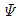
[Wb]라 할 때의 패러데이 법칙에서 유도 기전력 e[V]는 얼마인가? (단, Q는 전하량, B는 자속밀도, E는 전계의 세기이다.)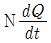
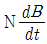
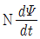
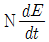
(정답률: 74%)
38. 저주파 증폭기의 혼변조 일그러짐(Inter-Modulation Distortion ; IM)은 어떤 일그러짐에 속하는가?
- 진폭 일그러짐
- 직선 일그러짐
- 위상 일그러짐
- 주파수 일그러짐
(정답률: 56%)
39. 주파수 변조(FM)회로에서 변조지수가 6이고, 신호주파수가 4kHz일 때 최대 주파수 편이는?
- 20 kHz
- 24 kHz
- 28 kHz
- 32 kHz
(정답률: 91%)
40. 호흡기의 기능 평가법 중에 “폐 내에서 공기가 폐포 간에 균형 있게 분포하는 기능”에 대한 평가 기능은?
- 환기능
- 분포능
- 확산능
- 피폭능
(정답률: 82%)
3과목: 의료안전·법규 및 정보
41. 의료기기 안전성·유효성 심사에 관한 자료 중 임상시험성적에 관한 자료에 반드시 포함되어야 할 내용에 해당되지 않는 것은?
- 임상시험대상 의료기기의 제조번호
- 기존 다른 유사 의료기기와의 유효성 비교
- 임상시험 방법
- 임상시험 기간
(정답률: 74%)
42. 의료기기법에서 정의하는 의료기기가 아닌 것은?
- 사람 또는 동물에게 단독 또는 조합하여 사용되는 기구·기계·장치·재료
- 장애인이 장애의 예방·보완과 기능 향상을 위하여 사용하는 의지(義肢)·보조기
- 임신조절의 목적으로 사용되는 제품
- 질병의 진단·치료·경감·처치 또는 예방의 목적으로 사용되는 제품
(정답률: 82%)
43. 임상시험용 의료기기의 첨부문서에 기재하지 않아도 되는 것은?
- 제품명 및 형명
- “임상시험용” 이라는 표시
- 제조업자 또는 수입업자의 상호
- 일회용인 경우 “일회용”이라는 표시와 “재사용 금지”라는 표시
(정답률: 59%)
44. 의료영상시스템의 저장방법에 대한 설명 중 옳지 않은 것은?
- 단기저장장치는 접근빈도가 높은 영상에 사용한다.
- 단기저장장치는 고속의 저장장치가 이용된다.
- 장기저장장치는 자기 디스크나 광디스크가 주로 사용된다.
- 장기저장장치는 고가의 저장장치가 이용된다.
(정답률: 66%)
45. 레이저의 안전관리 방법에 대한 설명으로 틀린 것은?
- 레이저용 보안경을 착용한다.
- 시술부위 이외의 피부에 노출을 금지한다.
- 반사된 레이저광은 에너지가 감소되어 위험하지 않다.
- 노출될 경우를 대비해 장막을 치료공간 내의 창문 등에 설치한다.
(정답률: 90%)
46. 컴퓨터 시스템의 한 분야로서 저장된 전문가의 지식을 통하여 사용자의 질의에 대한 응답을 제공하는 의사결정 시스템은?
- 데이터베이스시스템
- 전문가시스템
- 데이터통신시스템
- 병원정보시스템
(정답률: 89%)
47. 의료가스의 흐름, 공급압의 하락 및 공급장치의 기능불량을 추적하고 파악하기 위해 필요한 시스템은?
- 의료가스 차단 시스템
- 의료가스 제습 시스템
- 의료가스 비상정지 시스템
- 의료가스 공급감시 시스템
(정답률: 91%)
48. 의료기기 수입업소의 시설 중 반드시 구비해야 할 시설이 아닌 것은?
- 제품보관창고
- 영업소
- 시험실(시험이 필요한 경우)
- 고객센터
(정답률: 75%)
49. 의료기관 개설자에 대하여 사용중인 의료기기가 검사를 받아 부적합으로 판정된 경우 의료기기의 사용 중지를 명할 수 있는 자가 아닌 것은?
- 의료기기 사용업자
- 시장
- 구청장
- 식품의약품안전처장
(정답률: 82%)
50. 물리적인 상해나 고정 불량의 위험을 가능한 한 적게 설계하고 제작해야 하며 일정 중량을 견뎌야 하는 의료기기의 형태는?
- 휴대형 기기
- 이동형 기기
- 환자를 지지 고정하는 기기
- 손으로 잡는 기기
(정답률: 87%)
51. 데이터베이스 관리 시스템(DBMS)의 필수기능에 해당하지 않는 것은?
- 정의기능
- 표준기능
- 조작기능
- 제어기능
(정답률: 60%)
52. 접촉 특성에 따라 의료기기를 분류할 때 뼈, 조직, 혈액과 같은 인체에 접촉하는 의료기기는?
- 제한접촉형 의료기기
- 표면접촉형 의료기기
- 체내외 연결형 의료기기
- 체내 이식형 의료기기
(정답률: 85%)
53. 전자파에 대한 설명 중 틀린 것은?
- 전자파는 광범위한 주파수 영역을 가지는 전자기 에너지이다.
- 전자파는 파장이 짧을수록 에너지가 커진다.
- 전자파는 주파수가 높을수록 낮은 에너지를 갖는다.
- 전자파는 거리가 멀어질수록 약해지는 성질이 있다.
(정답률: 80%)
54. PACS 도입 시 기대효과로 적당하지 않은 것은?
- 영상획득 비용 절감
- 화상처리기법 등을 통한 진료의 질 향상
- 인터넷을 통한 타 병원과의 정보 교환이 용이
- 영상 데이터의 영구적인 보관이 가능
(정답률: 62%)
55. 의료용구의 전기·기계적 안전에 의한 공통 기준규격상 휴대형 기기에 부착한 운반용 핸들이나 손잡이는 핸들 및 그 장치수단에 그 기기 중량의 몇 배와 동등한 힘을 가한 시험에서 규정한 부하에 견뎌야 하는가?
- 1배
- 2배
- 4배
- 8배
(정답률: 83%)
56. 전기쇼크에 대한 설명으로 틀린 것은?
- 매크로쇼크의 전류치는 체중이 무거울수록 높아진다.
- 매크로쇼크에 대한 작용은 전류밀도와 관계있다.
- 매크로쇼크는 전류의 주파수가 높을수록 위험하다.
- 매크로쇼크는 몸의 끝에서 끝으로 흐르는 큰 전류를 말한다.
(정답률: 53%)
57. 전문가시스템(Expert System)과 가장 밀접하게 연관되어 있는 학문분야는?
- 경영학 - 조직행동
- 컴퓨터과학 - 인공지능
- 전자공학 - 회로이론
- 심리학 – 학습이론
(정답률: 83%)
58. 각 의료기관에서 개별적으로 추진해온 전자의무기록을 국가적으로 확장하여, 환자의 과거, 현재의 건강과 진료를 포함하여 개인의 건강정보를 모아 전자적으로 기록한 것을 무엇이라 하는가?
- AMR(Automated Medical Record)
- CMR(Computerized Medical Record)
- EHR(Electronoc Health Rocord)
- EMR(Electronic Medical Record)
(정답률: 74%)
59. 등전위 접지시스템을 검사하기 위해 측정기를 등전위 접지점과 환자환경 내의 각종 노출도체에 접속하여, 각각의 전위차를 측정하였다. 마이크로쇼크를 방지하기 위해 필요한 측정 전위차의 값은 얼마 이하가 되어야 하는가?
- 10 mV
- 1 mV
- 0.5 mV
- 0.⑤ mV
(정답률: 54%)
60. 환자의 임상진료와 관련된 모든 정보의 보관소로서 임상의사와 기억을 보조, 의사결정 과정의 직접적 도구 역할을 하며 병원, 임상전문가, 보험회사들 사이에서 의사소통의 중요한 매개체 역할을 하는 것은?
- OCS
- LIS
- EMR
- DCS
(정답률: 74%)
4과목: 의료기기
61. 인공심폐기의 구성 요소 중 저체온의 유도를 위한 것은?
- 여과기(Filters)
- 산화기(Oxygenator)
- 저혈조(Blood Reservoir)
- 열교환기(Heat Exchanger)
(정답률: 84%)
62. 인공심장을 구동메커니즘에 따라 분류할 경우 해당되지 않는 종류는?
- 전기박동식
- 전기기계식
- 전기유압식
- 유체기계식
(정답률: 44%)
63. 수액펌프에 대한 설명이 아닌 것은?
- 수액펌프의 알람기능에서 PURGE는 이물질 주입 시에 작동하는 표시이다.
- 일반적인 사용 온도조건은 5~40℃ 정도이며, 상대습도는 90%보다 낮은 상태를 유지하는 것이 일반적이다.
- 연속주입은 프로그램에 의해 작은 펄스형태로 한 번 주입량이 20 nano liters에서 100 micro liters 사이에서 정한다.
- 수액펌프의 종류로서 선형 연동펌프, 회전형 연동펌프, 교환형 피스톤 펌프, 횡격막형 피스톤 펌프 등이 있다.
(정답률: 64%)
64. 페이스메이커는 사용하는 전지의 수명이 매우 중요하다. 단자 전압이 1.8V이고 1Ah 용량의 전지는 얼마의 에너지를 저장하고 있는가?
- 1.8 J
- 1800 J
- 6480 J
- 6.48 J
(정답률: 61%)
65. 아네로이드 혈압계의 구조에 해당하지 않는 것은?
- 전극
- 압박대
- 고무구
- 압력계
(정답률: 75%)
66. 동맥압과 Cuff 압력이 같아지면 동맥 내의 혈액이 혈관에서 뿜어져 나와 흐르기 시작하면서 소리가 나는데 이때를 설명하는 용어는?
- Echo sound
- Cuff sound
- Korotkoff sound
- Muffing sound
(정답률: 75%)
67. 미숙아 및 치아노제·호흡장애 등의 이상 증세를 보이는 신생아를 수용하는 곳에 쓰이는 것으로 산소공급기가 달린 격리 보온기기를 무엇이라 하는가?
- 산소호흡장치
- 고압산소기
- 마취기
- 인큐베이터
(정답률: 90%)
68. X-선관의 관전압이 100 kVp, 관전류가 100 mA로 50m/s 동안 작동했을 경우의 열용량 (Heat Unit)은?
- 0.⑤ HU
- 500 HU
- 200000 HU
- 500000 HU
(정답률: 51%)
69. 감마카메라를 구성하는 요소들에 대한 설명으로 틀린 것은?
- 광전자 증배관 : 가시광선을 검출하여 전기신호로 변환해주는 장치이다.
- 섬광결정체 : 높은 에너지의 감마선을 낮은 에너지의 가시광선으로 바꾸어주는 역할을 한다.
- 시준기 : 인체 내에서 방출되는 감마선을 제한하여 일정한 방향으로 나오는 감마선만이 섬광결정체에 도달하도록 해주는 기구이다.
- 위치감지회로 : 감마선의 변화량에 의해 출력전압이 미분형태로 얻어지므로 이를 이용하여 감마선이 들어온 위치를 계산한다.
(정답률: 55%)
70. 생체신호계측용 차동증폭기를 이용하여 심전도를 측정하고자 할 때, 차동증폭기의 반전 입력단자(-)와 비반전 입력단자(+)에 접속하는 신체부위가 틀린 것은?
- aVR은 왼팔과 왼발의 중점에 –극, 오른팔에 +극을 접속한다.
- aVL은 오른팔과 왼발의 중점에 –극, 왼팔에 +극을 접속한다.
- aVF는 양발 중점에 –극, 왼팔에 +극을 접속한다.
- aVF는 양팔 중점에 –극, 왼발에 +극을 접속한다.
(정답률: 65%)
71. 비침습적인 방법으로 혈중산소포화도를 측정할 때 사용하는 전자파로 옳게 짝지어진 것은?
- 자외선 – 보라색 빛
- 자외선 – 빨간색 빛
- 적외선 – 파란색 빛
- 적외선 – 빨간색 빛
(정답률: 86%)
72. 정전기능 측정기의 회전자극기의 구성요소가 아닌 것은?
- 서보모터 장치
- 회전신호 발생기
- 안진측정기
- 회전상태 측정 센서
(정답률: 77%)
73. 체열진단기의 구성 중에서 Image grabber에 대한 설명으로 옳은 것은?
- 등온선 처리는 영상을 획득하기 전에 한다.
- 영상신호의 필터링과 이득조정을 통해 화상을 최적화한다.
- 이미지 파일을 하드디스크에 저장하게 해준다.
- Image processor에서 1차 처리된 신호를 바탕으로 Image grabber에서 작업을 한다.
(정답률: 53%)
74. 임상검사 장비 중 원심력의 작용에 의해 성분이나 비중이 다른 물질을 분리·정제·농축하게 하여 액체 속의 고체입자를 분리하는 장비는?
- 소변분석기
- 원심분리기
- 혈구분석기
- 혈액가스분석기
(정답률: 90%)
75. 다음 방사선 치료 장비 중 외조사 치료장치(external beam therapy machines)가 아닌 것은?
- 표재치료장치
- Cyclotron
- 코발트60 원격치료장치
- Gamma knife units
(정답률: 60%)
76. 반사된 초음파의 세기를 휘도(brigftness)변조하여 시간과 깊이(거리)의 관계로 표시한는 초음파 진단법은?
- M 모드
- A 모드
- B 모드
- 도플러 영상
(정답률: 54%)
77. 단색광기(monochrometer)의 부품이 아닌 것은?
- 프리즘
- 소작분무기
- 슬릿
- 회절격자
(정답률: 69%)
78. 피부의 저항을 최소화하면서 심부조직을 효과적으로 전기 자극하는 치료기로 중첩 현상을 이용하며 심부조직의 자극이나 근력증진 등에 효과적인 치료기기는?
- 저주파치료기
- 중주파치료기
- 간섭전류치료기
- 초음파치료기
(정답률: 54%)
79. 심근의 활동에 의해 발생되는 수 mV의 전위차를 피부표면 혹은 체내의 측정점에서 검출하는 측정법은?
- EEG
- ECG
- EMG
- ENG
(정답률: 85%)
80. 다음 중 전기수술기의 작용(기능)이 아닌 것은?
- 진통
- 절개
- 응고
- 지혈
(정답률: 88%)
5과목: 의용기계공학
81. 나사의 리드가 L 이고 유효 지름이 d 일 때 리드각은?
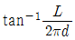
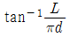
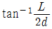
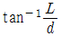
(정답률: 77%)
82. 적혈구가 붕괴되어 헤모글로빈이 혈구 밖으로 용출하는 현상을 무엇이라 하는가?
- 면역 반응
- 독소 반응
- 염증 반응
- 용혈 현상
(정답률: 88%)
83. 혈액에서 생체조직의 초음파 전파속도는 약 몇 m/s 정도인가?
- 500 m/s
- 1000 m/s
- 1500 m/s
- 2200 m/s
(정답률: 77%)
84. 평가방법 중 생체적합성을 평가하는 시험이 아닌 것은?
- 세포독성 시험
- 인장 시험
- 민감성 시험
- 혈액적합성 시험
(정답률: 86%)
85. 인장 시험을 통해서 다음과 같은 응력-변형률 곡선을 얻었다. 그림에 나타난 재료 중에서 인성(toughnss)이 가장 큰 재료는?
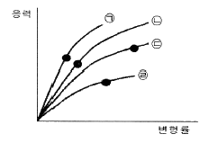
- ㉠
- ㉡
- ㉢
- ㉣
(정답률: 56%)
86. 뼈는 무기질(mineral)과 유기물(organic)으로 구성되어 있으며 약 20%의 빈 공간을 가지고 있을 때 무기물과 유기물이 차지하는 체적비율이 동일하고 각각의 밀도가 3.0g/cm3, 1.0g/cm3 이라면 이 뼈의 밀도는?
- 0.5 g/cm3
- 1.6 g/cm3
- 1.5 g/cm3
- 2.6 g/cm3
(정답률: 64%)
87. 물리적 에너지 중의 하나인 방사선을 이용한 의공학 기술에 해당하는 것으로 나열한 것은?
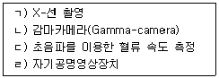
- ㄱ, ㄴ
- ㄱ, ㄴ, ㄷ
- ㄱ, ㄴ, ㄷ, ㄹ
- ㄴ, ㄷ, ㄹ
(정답률: 80%)
88. 생체재료의 기계적 성질을 평가하기 위한 시험방법 중 반복적인 하중에 의하여 발생하는 기계적 성질을 측정하는 동적 시험에 속하는 것은?
- 인장시험
- 압축시험
- 피로시험
- 경도시험
(정답률: 84%)
89. 다음 항목들 중 옳은 내용으로만 짝지어진 것은?
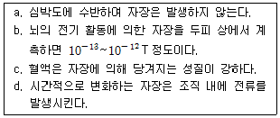
- a, b
- c, d
- a, c
- b, d
(정답률: 77%)
90. 변형률(strain)에 대한 설명으로 옳지 않은 것은?
- 인장 변형률은 “양”으로, 압축 변형률은 “음”으로 간주한다.
- 탄성물질에 대한 변형률은 전단응력에 반비례한다.
- 변형률은 단위가 없는 무차원 값이다.
- 변형률은 매우 작은 양이기 때문에 측정 시 정밀도가 매우 중요하다.
(정답률: 67%)
91. 원자핵이 자화(Magnetization)될 때 발생되는 현상에 대한 설명으로 틀린 것은?
- 원자핵들은 외부자장을 가하면 자장방향과 거의 수직으로 정렬한다.
- 세차운동의 회전속도는 원자핵의 종류에 따라서 각각 다르다.
- 원자핵은 자장이 없는 상태에서 제멋대로 배열되어 있다.
- 원자핵의 회전속도는 자장의 강도에 비례하며 변한다.
(정답률: 62%)
92. 생체재료로 활용되고 있는 재료의 특징이 아닌 것은?
- 강력한 부식성
- 풍부한 인성
- 우수한 강도
- 큰 연성
(정답률: 80%)
93. 보행에서 단하지지지(single-limb-support) 기간과 같은 것은?
- 같은 하지에서의 양하지지지(double-limb-support) 기간
- 반대편 하지에서의 양하지지지(double-limb-support) 기간
- 반대편 하지에서의 유각기(swing) 기간
- 같은 하지에서의 유각기(swing) 기간
(정답률: 69%)
94. 모세관 현상에 대한 설명으로 틀린 것은?
- 고체와 액체의 자유표면이 접할 때 접합부분에 곡면을 형성하게 된다.
- 수은의 자유표면 형상은 볼록한 곡면을 띤다.
- 액체 속에 모세관을 넣었을 때 관내의 액면이 외부와 자유표면보다 높거나 낮아지는 현상을 모세관 현상이라 한다.
- 액체의 응집력과 관과 액체 사이의 부착력 차이에 의해서 액면은 항상 볼록하게 형성된다.
(정답률: 65%)
95. 생체 내에 금속재료를 삽입하였을 경우에 일어나는 문제점으로 틀린 것은?
- 금속이온 용출에 의한 위해 작용
- 부식에 의한 파손
- 체내 결합에 따른 주위조직 위해 작용
- 생체분해성
(정답률: 76%)
96. 어떤 재료가 변형률 0.01까지 탄성변형을 하였다고 가정하고, 변형률 0.001에서 응력이 106 Pa 이었다면 이 재료의 탄성계수는 얼마인가?
- 106 Pa
- 107 Pa
- 108 Pa
- 109 Pa
(정답률: 47%)
97. 심장판막 재료로 사용되는 세라믹 재료는?
- 열분해탄소(pyroltic carbon)
- 알루미나(alumina)
- 바이오글라스(bioglass)
- 수산화인회석(hydroxyapatite)
(정답률: 40%)
98. 상지의지로만 구성된 항목으로 옳은 것은?
- 주관절의지, 수부의지, 수지의지
- 수부의지, 슬관절의지, 대퇴의지
- 하퇴의지, 주관절의지, 대퇴의지
- 대퇴의지, 고관절의지, 수지의지
(정답률: 84%)
99. 상처를 입은 조직에는 백혈구들이 이물질들을 제거하기 위하여 이동하여 온다. 이물질에 대항하여 탐식작용(phagocytosis)을 하는 세포가 아닌 것은?
- 호중구
- 단핵구
- 사이토카인
- 대식세포
(정답률: 70%)
100. Co-Cr 합금의 특징으로 틀린 것은?
- 높은 내마모성을 가지고 있다.
- 체액과 생리적 부하에 대한 내부식성이 우수하다.
- 주조과정을 통해서 인공관절로 만들 수 있다.
- 티타늄 합금의 강도보다 작다.
(정답률: 64%)
따라서, 3 mole KCl이 적당한 전해액입니다. 이는 K+와 Cl- 이온의 농도가 각각 3 mol/L인 용액으로, 세포 내부의 이온 농도와 유사하며, 또한 전해질의 농도가 높아 전극 내부의 전위 변화를 빠르게 감지할 수 있습니다.
반면, 150 mole NaCl은 너무 높은 농도로 세포 내부와는 차이가 크며, 3 mole HCl은 과도한 산성도를 유발할 수 있습니다. 3 mole NaCl은 Na+와 Cl- 이온의 농도가 동일하므로 전위 변화를 감지하기에는 적합하지 않습니다.